Contents
DEB fun
create temperature environments, run DEB model, various plots
Options
clear close all clc % runPhasePartnered: get phase partnered times series? yes = 1, no = 0 runPhasePartnered = 0; % doSave: save results? 1=yes, 0=no doSave = 0; % doPlot: plot results? 1=yes, 0=no doPlot = 1; doPlotTbTPCfreq = 1; % plot Tb and relative performance PDF? yes = 1, no = 0 doSaveTbTPCfreq = 1; % save plots? % runDEB: run DEB model sims? 1=yes, 0=no runDEB = 0; % runACE: run analyze_correlated_environments? yes = 1, no = 0 runACE = 1;
1.0 Create base time series with mean 0
Uses phase_partnered_timeseries.m (Gouhier synchrony package). If doSave, save in .mat file
SET: nyrs, sd, muPlus, seasonal_amp, nreps, nt, smpl_interval
nyrs = 10; % # years tInterval = 1; % sampling frequency per day eg tInterval = 1: 1 point per day, tInterval = 24: 24 points per day rho = 1; % rho: cross-correlation of time series; default = 1 gamma = 0; % gamma: relationship between frequency and power: P(f)=1/f^gamma; -2 < gamma < 0: blue noise; 0 < gamma < 2: red noise sd = 10; % sd: std. deviation within each time series (original simulations = 3) as is, part 1 has to be run separately for ea sd s_d = [0 1 3 5 10]; % vector mu = 0; % mu: mean of each time series; default = 0 muPlus = [8 12 20 27]; % muPlus: add to mean seasonal_amp = linspace(0,10,4); % seasonal_amp: seasonal amplitudes nreps = 10; % nreps: # replicates nt = floor(365.25*nyrs*tInterval); % number of time points smpl_interval = 1; % sampling interval (different than tInterval) 1 = daily, 1/24 = hourly % create datenum vector (for plotting) t1 = datenum('25-Sep-2010 07:00:00'); % day 1 of real temp data dtnum = t1:1/tInterval:addtodate(t1,nyrs,'year'); dtnum = dtnum'; if(runPhasePartnered)
for k = 1:nreps env = phase_partnered_timeseries (nt, rho, gamma, sd, mu, doSave); env_0(:,k) = env; end env = env_0; if (doSave) fname = sprintf('environment-env_plus_0.000-env_samp_0.000.mat'); save(fname, 'env'); end if (doPlot) pname = sprintf('environment- env plus 0.000; env samp 0.000.mat'); figure plot_ts(dtnum(1:size(env,1)), env, 'Body Temperature', pname) end
1.1 Adjust the mean
Create new time series' with means set in muPlus. If doSave, save each new series in separate .mat files
if doPlot figure end load(fname) for k = 1:length(muPlus) envPlus = env + muPlus(k); if (doSave) fname = sprintf('environment-env_plus_%1.3f-env_samp_0.000.mat',muPlus(k)); save(fname, 'envPlus'); end if (doPlot) pname = sprintf('environment-env plus %1.3f, %1.3f, %1.3f, %1.3f; env samp 0.000',muPlus(1:4)); plot_ts(dtnum(1:size(env,1)), envPlus, 'Body Temperature', pname) ylim([-2 42]) hold on end end
1.2 Add seasonal components
Create new time series' from 1.1 with seasonal components set in seasonal_amp. If doSave, save each new series in separate .mat files
time = 1:tInterval:nt;
freq=1;
sampling_freq=1/(nt/nyrs);
for l = 1:length(seasonal_amp)
s(:,l) = seasonal_amp(l) * cos(2*pi*freq*time*sampling_freq);
end
if doPlot
figure
hold on
end
for k = 1:length(muPlus)
fname = sprintf('environment-env_plus_%1.3f-env_samp_0.000.mat', muPlus(k));
load(fname)
for l = 1:length(seasonal_amp)
envSeason = bsxfun(@plus,envPlus,s(:,l));
if (doSave)
fname = sprintf('environment-env_plus_%1.3f-env_samp_%1.3f.mat', muPlus(k), seasonal_amp(l));
save(fname, 'envSeason');
end
if (doPlot)
pname = sprintf('environment-env plus %1.3f-env samp %1.3f', muPlus(k), seasonal_amp(l));
subplot(length(seasonal_amp) , 1 , l)
plot_ts(dtnum(1:size(env,1)), envSeason, 'Body Temperature', pname)
ylim([-15 50])
hold on
end
end
end
end
2.0 Plot body temperature and relative performance PDFs
if doPlotTbTPCfreq
Extract data by filename organization
First by seasonal amplitude, then by mean, then by standard deviation
for i = 1:length(seasonal_amp) for j = 1:length(muPlus) for k = 1:length(s_d)
% extract data by filename organization fname = sprintf('DEB_out-env_plus_%1.3f-env_samp_%1.3f-env_X_%1.3f_%dsdNoise.mat', ... muPlus(j), seasonal_amp(i), 2.620, s_d(k)); load(fname) data = DEB_out(1); % only extracts first replicate [~, ~, ~, ~, ~, ~, ~, Tb_out] = getRates(data, smpl_interval); TP_out = getTPC(1,Tb_out);
Plot body temperature PDF
tbedge = [-20:3:70];
figure
histogram(Tb_out, tbedge, 'Normalization', 'pdf', 'EdgeColor', 'none')
ylim([0 0.33])
hold on
% pd = fitdist(Tb_out', 'Normal');
% x = xlim;
% x = x(1):0.1:x(2);
% y = pdf(pd,x);
% plot(x,y,'LineWidth',2)
xlabel('body temperature')
ylabel('probability density function');
ax = gca; set(ax,'FontSize',12);
mTitle = sprintf('Tb %1.3f; amp %1.3f; sd %1.3f', muPlus(j), seasonal_amp(i), s_d(k));
tits = mtit(mTitle, 'fontsize', 12);
figname = sprintf('TbPDF_Tb_%1.3f-amp_%1.3f-sd_%1.3f.tiff', muPlus(j), seasonal_amp(i), s_d(k));
if doSaveTbTPCfreq
matfigname = sprintf('TbPDF_Tb_%1.3f-amp_%1.3f-sd_%1.3f.fig', muPlus(j), seasonal_amp(i), s_d(k));
saveas(gcf, figname)
saveas(gcf, matfigname)
end

 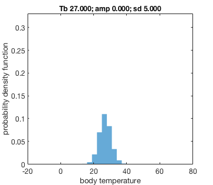 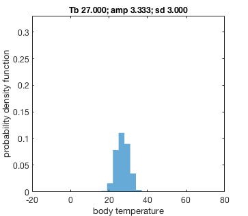
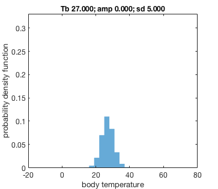 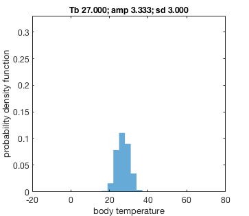 


 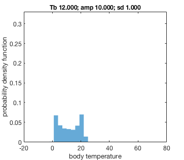
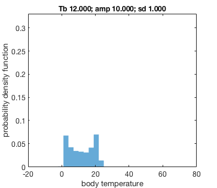 

Plot performance PDF
tpedge = [0:0.03:1];
figure
tp = getTPC(1,Tb_out);
histogram(tp, tpedge, 'Normalization', 'probability', 'EdgeColor', 'none');
ylim([0 0.4])
hold on
xlabel('performance')
ylabel('probability density function');
ax = gca; set(ax,'FontSize',12);
mTitle = sprintf('performance %1.3f; amp %1.3f; sd %1.3f', muPlus(j), seasonal_amp(i), s_d(k));
tits = mtit(mTitle, 'fontsize', 12);
figname = sprintf('performancePDF_Tb_%1.3f-amp_%1.3f-sd_%1.3f.tiff', muPlus(j), seasonal_amp(i), s_d(k));
if doSaveTbTPCfreq
matfigname = sprintf('performancePDF_Tb_%1.3f-amp_%1.3f-sd_%1.3f.fig', muPlus(j), seasonal_amp(i), s_d(k));
saveas(gcf, figname)
saveas(gcf, matfigname)
end


 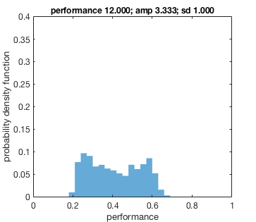 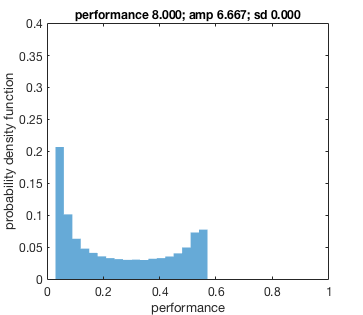 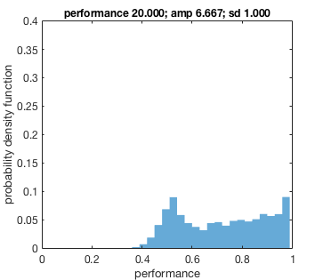 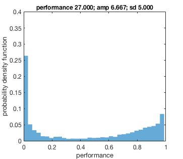
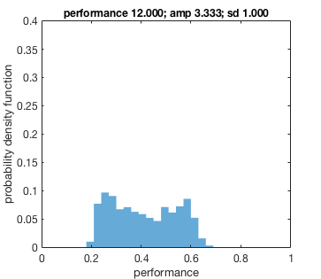 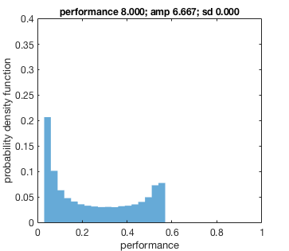 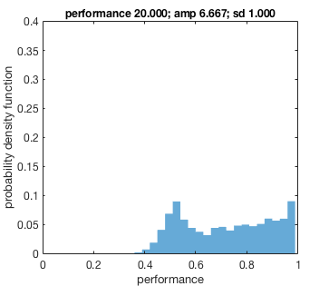 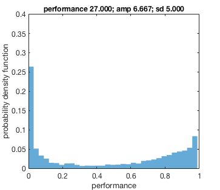 end end end
end
3.0 run DEB model
Set food values (here constant)
half saturation coefficient K = 6.12
% based on percentiles % chl_low = 3.55; % 33rd percentile of bootstrapped (n=20) GlobColour SH daiy, f = 0.367 % chl_med = 8.32; % 66th percentile, f = 0.576 % chl_hi = 44.58; % 99th percentile, f = 0.879 % based on relative to f % use X = getX(f,K) to get food value by f value chl_low = 2.62; % f = 0.3 % chl_low = 4.08; % f = 0.4 chl_med = 6.12; % f = 0.5 chl_hi = 55.08; % f = 0.9 % pack food densities foodDensity = [chl_low chl_med chl_hi];
Run model
% Run DEB model if runDEB % Model parameters (set outside DEB model function to save time): % load and set structure with metaData, par data and auxiliary data (files saved from last estimation routine) load('metaData.mat') load('data.mat') % load('auxData.mat') estimData.metaData = metaData; estimData.data = data; % set par structure [par, txtPar] = set_pars(smpl_interval, estimData); for m = 1:length(foodDensity) % # of food densities Xenv = repmat(foodDensity(m),nt,1); tic % set initial condition parameter stucture (food dependent) initpars = get_initpars(foodDensity(m), par); for k = 1:length(muPlus) fname = sprintf('environment-env_plus_%1.3f-env_samp_0.000_10sdNoise.mat', muPlus(k)); load(fname) for l = 1:length(seasonal_amp) fname = sprintf('environment-env_plus_%1.3f-env_samp_%1.3f_10sdNoise.mat', muPlus(k), seasonal_amp(l)); load(fname) for n = 1:nreps Tbenv = envSeason(:,n); out = run_DEB_071116(par, initpars, smpl_interval, Tbenv, Xenv, dtnum, 0); DEB_out(n) = out; end fname = sprintf('DEB_out-env_plus_%1.3f-env_samp_%1.3f-env_X_%1.3f_10sdNoise.mat', muPlus(k), seasonal_amp(l), foodDensity(m)); save(fname,'DEB_out') end end end end
run analyze_correlated_environment. Contains ScatteredInterpolation, compare_noise, etc.
names = analyze_correlated_environment(gamma, muPlus, seasonal_amp);
% if runACE % analyze_correlated_environment % end